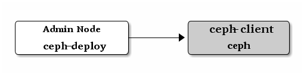

块设备入门¶
要实践本手册，你必须先完成存储集群入门 ，并确保
Ceph 存储集群处于 active + clean 状态，这样才能使用 Ceph 块设备。

你可以在虚拟机上运行 ceph-client 节点，但是不能在与 Ceph
存储集群（除非它们也用 VM ）相同的物理节点上执行下列步骤。详情见 FAQ 。
创建一个块设备存储池¶
在管理节点上，用
ceph工具来创建一个存储池（我们建议以 rbd 为名）；在管理节点上，用
rbd工具来初始化新建的存储池，这样才能用作 RBD:rbd pool init <pool-name>
配置块设备¶
在
ceph-client节点上创建一个块设备映像。rbd create foo --size 4096 --image-feature layering [-m {mon-IP}] [-k /path/to/ceph.client.admin.keyring] [-p {pool-name}]
在
ceph-client节点上，把映像映射为块设备。sudo rbd map foo --name client.admin [-m {mon-IP}] [-k /path/to/ceph.client.admin.keyring] [-p {pool-name}]
在
ceph-client节点上，创建文件系统后就可以使用了。sudo mkfs.ext4 -m0 /dev/rbd/{pool-name}/foo
此命令可能耗时较长。
在
ceph-client节点上挂载此文件系统。sudo mkdir /mnt/ceph-block-device sudo mount /dev/rbd/{pool-name}/foo /mnt/ceph-block-device cd /mnt/ceph-block-device
如果你想让块设备在启动时自动映射并挂载（而且在关机时卸载并取消映射），请参考 rbdmap 手册页。
详情见块设备 。